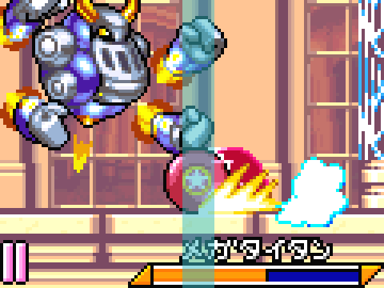

Mega Titan
In the Mega Titan segment, you will start from the bottom door and unlock some switches to get easy Peppermint Palace access. It is important to note that we kill Mega Titan using wheel meaning you do not soft reset after the boss. You will spawn at the door which is why you must do either Gobbler or Meta Knight after this segment.
Cannon Spike Maze
If you do not fat Kirby before entering the first cannon, a single mistake will lose your wheel. Doing this is less than a 2 second timeloss and I recommend it until you are going for a top time.
Gordo Turn
There is a very tight window where you can turn before going through a Gordo without taking damage. This is very difficult to time, however going for it is worth it because if you miss you will lose the same time as if you don't go for it.

Mega Titan early hit visual cue
Note: I currently play on emulator so you may need to adjust your timing based on input lag.
Mega Titan Backup: Cutter
In case you lose wheel before Mega Titan another effective way to take him down quickly is with cutter. One you have him stuck in a corner, just spam the cutter from the middle of the room. On the second phase it only takes 3 cutter attacks and then a single star will finish him.